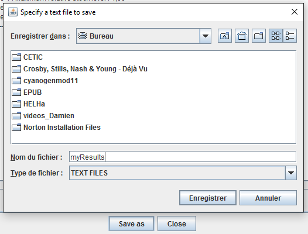

One Shot Simulation Results
Once the "One Shot" simulation is over, results are displayed in a new window. This window is structured in several tabs :
- Trace (Events) : Details each action of the simulation at a defined time unit
- Elements : shows the final state of each property for every elements
- Queries : shows queries results
Monte-Carlo Simulation Results
Once the "Monte-Carlo" simulation is over, results are displayed in a new window. This window is structured in several tabs :
- Runtime
- Elements : shows the final state of each property for every elements (max, min, mean and variance)
- Queries : shows queries results (max, min, mean and variance
Save as
You can also save your results in a text file with a click on the "Save as" button. The file extension is already set by the system. All you have to do is to specify the name and the location of the file. 